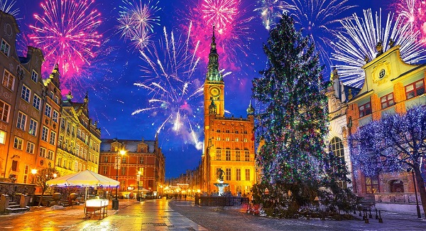

Gdańska Noc Sylwestrowa
30.12.2019 | 19:34:39 | MM
Każda z sylwestrowych dzielnic będzie charakteryzowała się inną tematyką muzyczną. Charakterem miasta stają się dzielnice, dlatego sentymentalny park Oruński z amfiteatrem przywita Nowy Rok przy polskich hitach zespołu Vox, kolorowy Chełm w Jarze Wilanowskim będzie się bawił z zespołem Happysad, elektryzujące Brzeźno powita Nowy Rok na molo przy muzyce duetu Kalwi & Remi, rockowa Oliwa rozgrzeje nas wspólnie z Nocnym Kochankiem przy Hali Olivia, natomiast koncert główny odbędzie się w tym roku przy Długich Ogrodach, gdzie folkowo pożegnamy stary rok wraz z zespołem Zakopower!

Byłeś już w Gdańsku? Podziel się swoimi doznaniami z innymi!
Marysia | 10.03.2019 | 19:39:01 Byłam polecam z całego serca!!
Papież | 10.03.2019 | 19:40:00 Było super
Komentarze czytelników